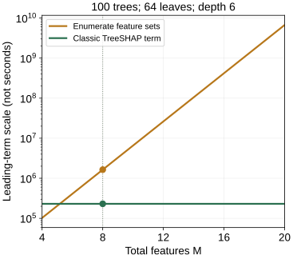

How TreeSHAP Reuses Tree Structure
TreeSHAP gains speed by using a model’s structure. A generic method sees complete inputs and predictions; a tree-specific method can inspect split features, branch weights, and leaves. It reuses the contribution of a path across many possible reveal sets.
First inspect the fitted four-leaf tree. This chapter then explains what is being reused, without reproducing the full algorithm’s indexing machinery.
Keep the explanation question fixed while changing the calculator
Kernel SHAP and TreeSHAP can compute the same Shapley allocation when their output and hidden-feature rules match. LIME instead fits a local approximation; it is not a slower version of the same attribution question. The method-selection chapter makes that distinction.
A direct reference calculation queries every feature set, computes its expected output, then combines the marginal increases. TreeSHAP works from the tree internals to combine equivalent terms. It must still account for leaves outside the original prediction route when a split feature is hidden.
Explain the contribution of one leaf first
A tree’s output can be written as the sum of its leaf outputs, with each leaf multiplied by an indicator for reaching it. For a coalition, replace that indicator with the explanation weight reaching the leaf. Because these leaf functions add, their Shapley contributions add too.
Explain (A, B) = (1, 1) in our balanced tree. Focus on the score-8 leaf. For either split on its path, a hidden feature sends half the weight toward that leaf; a revealed feature sends all of it there. Revealing A therefore changes its branch factor from 0.5 to 1, an increase of 0.5.
What about B? If A is revealed first, B is still hidden and supplies factor 0.5. If A is revealed second, B is known and supplies factor 1. Average those two possibilities: (0.5 + 1) / 2 = 0.75. Thus this leaf supplies 8 × 0.5 × 0.75 = 3 to A’s contribution.
The score-8 leaf contributes 3 to A. Summing all leaf terms gives A’s full contribution, 2.75.
The score-8 leaf alone contributes 3 to each feature, but those are not the final answers. A’s other nonzero terms are −0.75 from score 2 and +0.50 from score 4, giving 2.75. B gets +0.25 from score 2 and −1.50 from score 4, giving 1.75. A leaf outside the fully observed route can supply a negative term because revealing a feature rules that leaf out.
| Leaf score | A term | B term |
|---|---|---|
| 0 | 0 | 0 |
| 2 | −0.75 | +0.25 |
| 4 | +0.50 | −1.50 |
| 8 | +3.00 | +3.00 |
| Total | 2.75 | 1.75 |
Group terms by how many features are revealed
For a longer path, a target feature can appear after many different sets of other features. The Shapley weight for a preceding set depends on its size, while the path determines how much weight that set sends to the leaf. We can add path weights for sets of the same size before applying the appropriate Shapley weight.
For illustration, consider a balanced path leading to score 8. The explained row follows this path. Each hidden path feature sends factor 0.5 toward the leaf; each revealed feature sends factor 1. Keep one feature as the target and vary the number of other features on the path.
| Revealed others | Summed path factors | After Shapley weighting |
|---|
One other feature gives two totals, 0.5 and 1. After weighting, their sum is 0.75. The leaf’s target-feature term is 8 × 0.5 × 0.75 = 3.
With two other features, there are four subsets: reveal neither, either one, or both. Their factors are 0.25, 0.5, 0.5, and 1. Grouping by size leaves just three totals: 0.25, 1, 1. The two size-1 subsets have been combined without losing information needed by their common Shapley weight. A feature absent from the path cannot change this path-based leaf game, so it can be left out of that leaf’s calculation.
Optional: the small recurrence behind this bookkeeping
Let $c_k$ be the summed path factors for sets containing $k$ of the already processed features. When a new feature arrives, let $z$ be its branch factor when hidden and $o$ its factor when revealed. A set of new size $k$ either excludes this feature or includes it:
Start with $c_0=1$ and treat out-of-range entries as zero. In the balanced example, $z=0.5$ and $o=1$. If there are $n$ other path features, each preceding set of size $k$ has Shapley weight $1/[(n+1)\binom{n}{k}]$. Apply it to $c_k$, sum over sizes, then multiply by the target’s factor change and the leaf score. The general reveal-order formula explains these weights.
This illustration uses distinct features on a balanced path. The complete algorithm also handles incompatible revealed branches, differing covers, and repeated split features. Its extend and unwind operations maintain and remove path information; repeated occurrences of a feature remain one player. See the repeated-feature tree and the reference Python implementation.
Read the speed claim as a scaling argument
Write $T$ for the number of trees, $L$ for the maximum leaves per tree, $D$ for maximum depth, and $M$ for total features. The original paper compares direct feature-set enumeration with its classic path-based TreeSHAP algorithm:
The key change is replacing a factor exponential in all features with a polynomial in path depth. These are leading-order descriptions of the stated algorithms, not literal operation counts. Modern variants, interventional backgrounds, model integrations, and implementation overhead can have different runtime behavior. Lundberg et al., Section 3.

With 8 features, the enumeration term is 1,638,400 and the classic TreeSHAP term is 230,400. Constants and implementation details are omitted.
{kind=link}
A generic explainer can sample rather than enumerate, and can skip features that do not vary. Larger backgrounds increase the work of interventional explanations. Measure runtime on your model and chosen settings; the plot explains the algorithmic opportunity, not which call will be fastest on every small case.
A global plot is a later aggregation
TreeSHAP computes local contributions. A global bar or beeswarm then summarizes contributions across selected rows; it is not a competing computation method. The next chapter separates combining trees for one prediction from summarizing rows for one feature.
The leaf-and-bookkeeping script exports every leaf game, coefficient total, and scaling value. It checks the summed leaf terms against the library-verified example and the grouped totals against direct subset enumeration. Run it beside the fitted-tree script; the plot export also requires Matplotlib.
References and further reading
- Lundberg, Erion & Lee: TreeSHAP — leaf/path reuse and the original complexity analysis.
- Python version of TreeSHAP — the complete path-extension and unwind bookkeeping.
- TreeExplainer documentation — supported model, reference, and output settings.